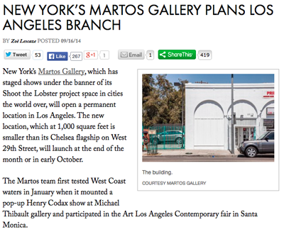
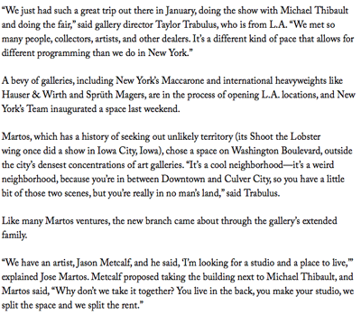
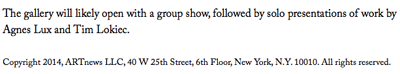

Curator: Sabine Breitwieser, Director together, with Christina Penetsdorfer, Curatorial Assistant, Museum der Moderne Salzburg
Artists in the exhibition: Anonym, Kader Attia, Elias Baeck, Lothar Baumgarten, Alfred Baumgartner, Heimrad Bäcker, Michael Blum, Marcel Broodthaers, Johann August Corvinus, Alice Creischer, Gerti Deutsch, Otto Dix, Stan Douglas, Harun Farocki, Omer Fast, Ian Hamilton Finlay, Simone Forti, Andrea Fraser, Andrea Geyer, Dan Graham, Renée Gree, Ernst Haas, Jörg Immendorff / Felix Dröse, Jörg Immendorff, Sanja Iveković, Kurt Kaindl, Gülsün Karamustafa, Anselm Kiefer, Käthe Kollwitz, Christoph Lederwasch, Deimantas Narkevičius, Walid Raad / The Atlas Group, Elaine Reichek, Aura Rosenberg, Martha Rosler, Anri Sala, Andreas Siekmann, Wael Shawky, Chen Shaoxiong, Johann Conrad Stapff, Danh Vō, Lawrence Weiner, Akram Zaatari.
Exhibition Link
F is a biannual magazine published and edited by Adam Marnie. The inaugural issue includes: a central section of photography/painting framed by a ruptured reworking of Benjamin’s Art in the Age of Mechanical Reproduction that features works by Leigh Ledare, Bobbi Woods, Ryan Foerster, Megan Plunkett, Peter Sutherland and Steel Stillman; an unpublished letter to the editors of Artforum by Justin Lieberman; Rose Marcus photographs paired w a prequel to J. G. Ballard’s Vermilion Sands written by Matt Kenny (in the form of a NYPD interrogation transcript); a selection of Aura Rosenberg’s Dialectical Porn Rocks; and more by Cali Thornhill Dewitt, R. H. Lossin, Kevin Zucker, Heather Rowe, Nowork, Aaron Aujla and Elizabeth Jaeger.
F is 11×8.5″, 100 pages, b/w, 250 copies, risograph printed by Jesse Hlebo. Retails for $15. Available here.

Justin Lieberman
Deep Gap, NC
2014
June 14 - August 10
Opening Saturday, June 14: 6-8PM
Rowhouse Project
2640 Huntingdon Ave
Remington, Baltimore
http://rowhouseproject.com
info@rowhouseproject.com
Hours: Sunday 4-8PM & by appointment
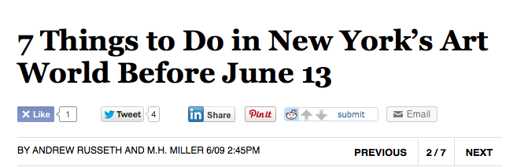
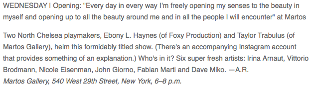
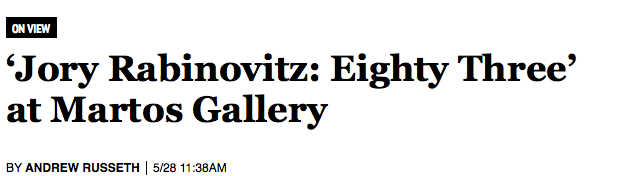
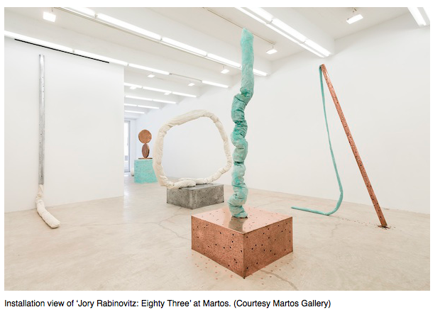
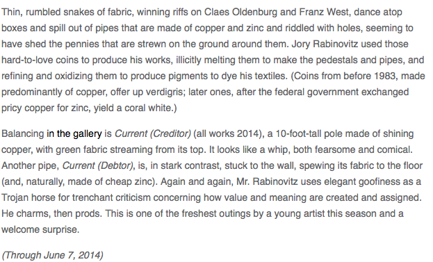

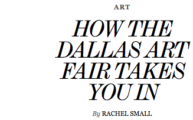
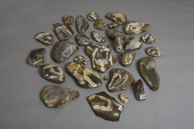
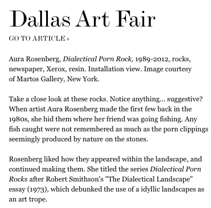

For the final two weeks of his solo exhibition, Martos Gallery will present Arbeitsbeschaffungsmaßnahme, a work in which Justin Lieberman has assembled together 176 pieces of drawing, painting, and ephemera authored by a variety of sources, including artists AA Bronson, Kembra Pfahler, Bruce LaBruce, Kate Levant and Lieberman himself. Cut into 300 contiguous parts, the work currently lays stacked in a glass vitirine. The work's label-adhered to the side of the vtirine-acts as a documentary list and a key to the artists and materials incorporated in the piece.
Starting on Tuesday, April 1st, Arbeitsbeschaffungsmaßnahme will be on view in its entirety— hung up and reassembled back into a 10 by 16 foot picture, which exists simultaneously as a collage and a salon, a painting and a group show. Stenciled on the surface is the title of the piece, its literal English translation being "job creation scheme".
The exhibition will remain open with its concurrent group show, Poor Working Conditions, through Saturday, April 12th.
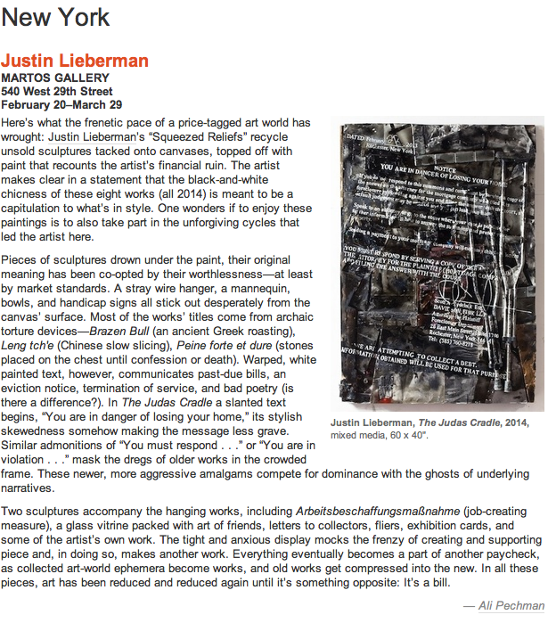
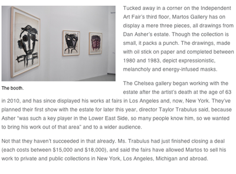
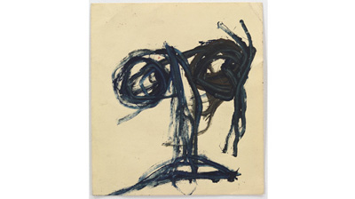
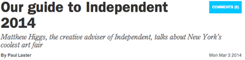
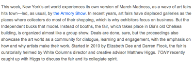
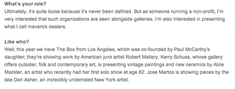
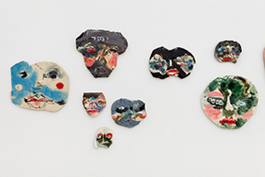
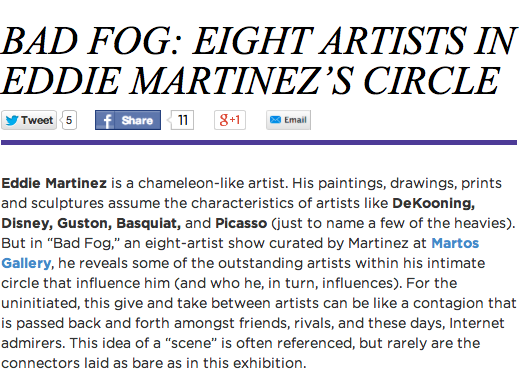
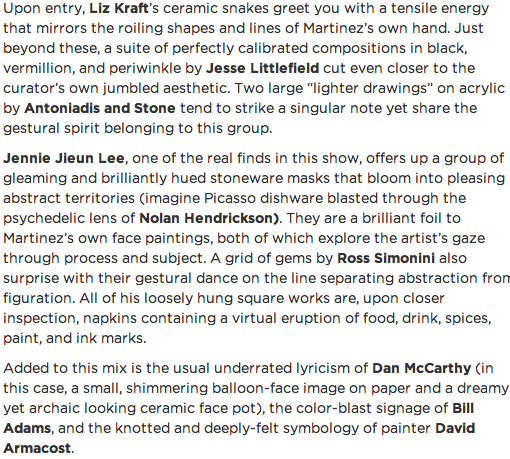
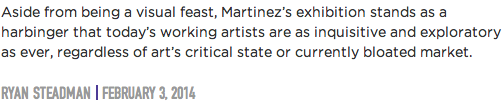
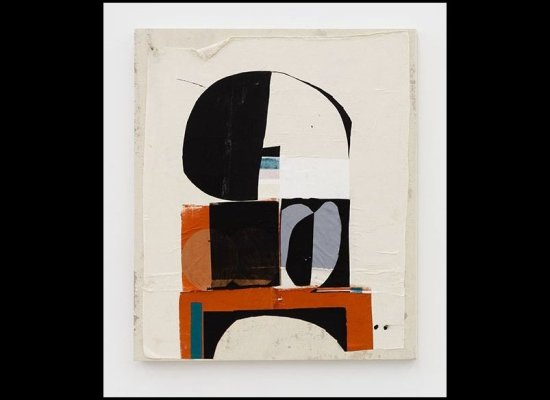
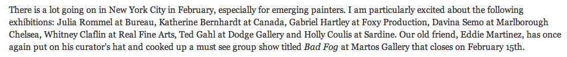
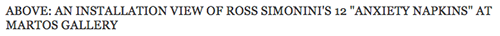
To read the interview online click here
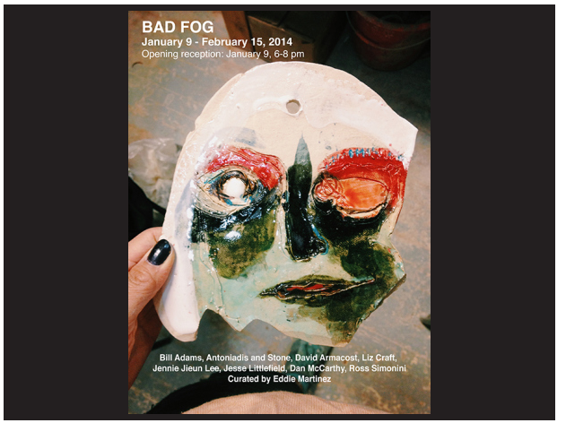
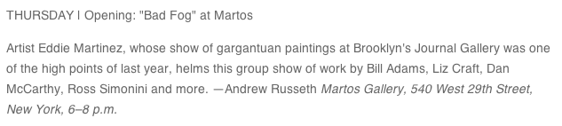
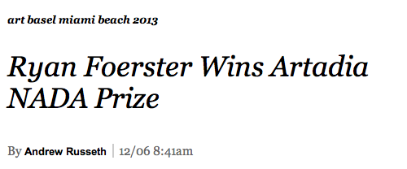
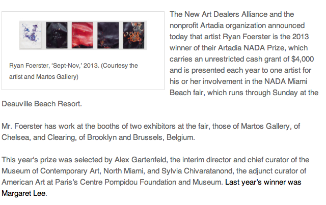
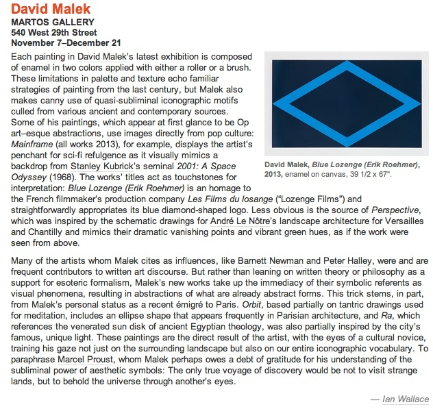
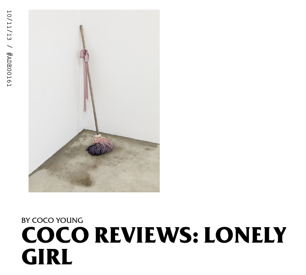

To continue reading the article online click here
Curated by James Cope
Artadia, New York
For additional information on the exhibiton click here

Some of our favorite lady artists are going to be in a group show on September 12 at Martos gallery in Chelsea. The show, titled Lonely Girl, got its name from the YouTube web series LonelyGirl15, which trolled the entire internet in 2006 by presenting a scripted show disguised as a teenage girl's video diary. All of the girls in tonight's show incorporate the internet into their work in some way, and many of the artists themselves have the sort of gargantuan digital footprint that the NSA dreams about in their sloppiest of wet dreams. According to the press release, "The artists in this show represent an unprecedented moment in cultural history—where the artist themselves can be equally or sometimes more visible than their artworks themselves."
The show was organized by Asher Penn, the editor of Sex magazine, and features Al Baio, Petra Cortright, Maggie Lee, Greem Jellyfish, Bunny Rogers, Analisa Teachworth, and Amalia Ulman. You might recognize a couple of those names from this very website. Maggie Lee, for instance, has shot four magazine covers for us, which gives her the honor of Most VICE Covers Shot by a Single Photographer (probably…. we’ve never actually counted). And Petra is a crazy person who makes videos like this and was once the object of Teen Laqueefa’s lust. We asked Maggie to send us some photos of the show, but it seems they are doing this thing the old fashioned way and keeping all images of it off the internet, which seems a tad hypocrytical for a show that is at least partially inspired by the internet, but whatever. Just show up at 540 West 29 Street IRL on Thursday night anytime between 6:00 and 8:00 PM and have your brain scrambled.
http://www.vice.com/read/come-on-get-lonely
Curated by Karen Archey.
For more info click here


Robert Janitz at NADA Cologne
B.H.Q.F.U. Visiting Lecture Series: Justin Lieberman
Sunday, April 7, 2013
4:00pm
34 Avenue A, 3rd floor, 10009
Tuesday March 19, 7 pm
Justin Lieberman at SC Conversations: On Pedagogy and Practice
with Keith Boadwee
SculptureCenter
44-19 Purves St
Long Island City, NY
David Malek
Beaux Arts magazine n°345
Pebble Bay Mafia

Ryan Foerster and Robert Janitz
Robert Janitz Birthday Present, 2012
mixed media on concrete
dimensions variable
Nickas, Bob and Davina Semo. "X Marks the Rot," Mousse Magazine #35, October 2012.
Andy Cross, "House Painter"
Andy Cross with Tamara Gonzales
''A Sustainable Artist's Statement'' by Andy Cross
Andy Cross and Chuck Webster
Fuzz
Bridgehampton: Overcast
Jess Fuller Install
NADA NYC
New Traditionalists
http://artycok.tv/lang/cs-cz/13693/justin-lieberman
Justin Lieberman on Artyčok TV
NADA NYC
May 4 - 7, 2012
Jess Fuller @ New Traditionalists opening
Image: Denise Kupferschmidt
wurtz_detail
March 22 6 - 8 pm
Dallas Art Fair
April 13 - 15, 2012
http://www.dallasartfair.com/index.html
Nada NYC
May 4 - 7, 2012